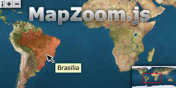
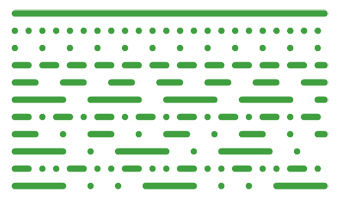
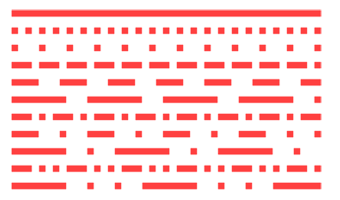

|  |
Mapzoom.js 1.4 allows you to add zoom and pan functionality to oversized images/vectors and automatic area highlighting to image maps on your webpages. It's a conceptual combination of ShiftZoom and Mapper. It also allows you to build interactive applications through the various user commands. It uses unobtrusive javascript to keep your code clean. It works in all the major browsers - Mozilla Firefox 3+, Opera 9.5+, Chrome 5+, Safari 3.1+ and IE 6+. Works also on older browsers supporting images/ createElement/ getElementById but without vector support, else it'll degrade and your visitors won't notice a thing. |
Download mapzoom.js and include it into your webpages HEAD section.
<script type="text/javascript" src="mapzoom.js"></script>
// only if the cursor images for IE are not in the current path
<scriptscript type="text/javascript">
mapzoom.defaultCurpath='images/cursors/';
</script>
To add mapzoom just set the event onload="mapzoom.add(this);" to a div surrounded image.
To get individual area highlightings, add one or more classes to the image map area.
<map>
...
<area shape="poly" class="noborder vacolor00ff00" href="#" coords="...">
...
</map>
To get multiple area selections, add one or more id's to the areas rel attribute.
<map>
...
<area shape="poly" id="blue" rel="green,red" href="#" coords="...">
<area shape="poly" id="green" rel="red,blue" href="#" coords="...">
<area shape="poly" id="red" rel="green,blue" href="#" coords="...">
...
</map>
To force a group of areas using the attributes of the initial area.
<map>
...
<area shape="rect" id="black" class="forcegroup vacolor000000" rel="green,red,blue" href="#" coords="...">
...
</map>
To subtract one or more areas from another one, add the id's to the areas rev attribute.
<map>
...
<area shape="poly" id="red" rev="green,blue" href="#" coords="...">
<area shape="poly" id="blue" href="#" coords="...">
<area shape="poly" id="green" href="#" coords="...">
...
</map>
Add one or more classes to the image map area, to set individual preselection values.
<map>
...
<area shape="poly" class="specified pacolor00ff00 pbacolorfffff vaopacity50 vbopacity75" href="#" coords="...">
...
</map>
Mouse- and Keyboard-driven handling:
|
zoom in | |
zoom in | |
zoom in* | ||||||
|
zoom out | |
zoom out | |
zoom out* |
Keyboard-driven handling: (if focused through mouse over image)
 |
pan left | |
pan left (fast) | |
pan left (slow) | ||||||
| pan right | pan right (fast) | |
pan right (slow) | ||||||||
 |
pan up | |
pan up (fast) | |
pan up (slow) | ||||||
 |
pan down | |
pan down (fast) | |
pan down (slow) | ||||||
 |
zoom in* | zoom in (fast) | zoom in | ||||||||
 |
zoom out* |  |
zoom out (fast) | zoom out |
Stick/Finger-driven handling: (touch events)
mapzoom.defaultCallback = null; //STR simple callback functionmapzoom.defaultFading = true; //BOOLEAN startup image fadingmapzoom.defaultButtons = true; //BOOLEAN left top buttonsmapzoom.defaultNozoom = false; //BOOLEAN disable zooming featuremapzoom.defaultBicubic = false; //BOOLEAN enable bicubic image interpolation for IE7+mapzoom.defaultWheelinvert= false; //BOOLEAN makes zoom behaviour identical with Google Mapsmapzoom.defaultWheelstep = 20; //INT/FLOAT 0-100 (%) wheel step size percentagemapzoom.defaultZoom = 0; //INT/FLOAT 0-100 (%) zooming percentagemapzoom.defaultXpos = 50; //INT/FLOAT 0-100 (%) horizontal positionmapzoom.defaultYpos = 50; //INT/FLOAT 0-100 (%) vertical positionmapzoom.defaultOpacity = 70; //INT 0-100 (%) zoom button opacitymapzoom.defaultMillisec = 30; //INT 5-100 zoom interval delaymapzoom.defaultIntitle = 'zoom in'; //STR zoom in button title textmapzoom.defaultOuttitle = 'zoom out'; //STR zoom out button title textmapzoom.defaultInfoblock = '<dl>...<\/dl>'; //STR Info/Help block contentmapzoom.defaultCurpath = ''; //STR cursor path (*.cur) IE onlymapzoom.defaultLowres = ''; //STR lowres image (dimension equals elements width and height)mapzoom.defaultIcons = null; //OBJ icon array (see mapzoom.construct)mapzoom.defaultShowcoords = false; //BOOLEAN show coordinatesmapzoom.defaultRelativecoords=false; //BOOLEAN relative instead of absolute pixel coordinatesmapzoom.defaultPixelcoords= true; //BOOLEAN show Pixel coords instead of Lat/Lonmapzoom.defaultPercentcoords=false; //BOOLEAN show percentage instead of Lat/Lon/Pixel coordinatesmapzoom.defaultForcetouchui=false; //BOOLEAN forces touch UI over the mouse UI if both availablemapzoom.defaultOverview = true; //BOOLEAN show overviewmapzoom.defaultOvsfact = 25; //INT 10-50 (%) overview size factormapzoom.defaultOvaopac = 75; //INT 0-100 (%) overview area opacitymapzoom.defaultOvacolor = 'red'; //STR overview area css colormapzoom.defaultOvbcolor = 'white'; //STR overview border css colormapzoom.defaultOvborder = ''; //INT 0-20 (px) or "" overview border widthmapzoom.defaultPvaopac = 33; //INT preselection vector area opacity 0-100 (%)mapzoom.defaultPvbopac = 66; //INT preselection vector border area opacity 0-100 (%)mapzoom.defaultPvacolor = '#ffffff'; //STR preselection vector area color '#000000'-'#ffffff'mapzoom.defaultPvbcolor = '#808080'; //STR preselection vector border color '#000000'-'#ffffff'mapzoom.defaultVaopac = 33; //INT vector area opacity 0-100 (%)mapzoom.defaultVbopac = 66; //INT vector border opacity 0-100 (%)mapzoom.defaultVbwidth = 80; //INT vector border width 20-100 (%)mapzoom.defaultVbcolor = '#000000'; //STR vector border color '#000000'-'#ffffff'mapzoom.defaultVacolor = '#0000ff'; //STR vector area color '#000000'-'#ffffff'mapzoom.defaultVnborder = false; //BOOLEAN vector area no border (true or false)mapzoom.defaultVafading = false; //BOOLEAN vector area fading (true or false)mapzoom.add(image[, options]);image == div surrounded imageoptions e.g. {overview: true, opacity: 32, ...}callback == STRING null or 'myFunction' Default: nullfading == BOOLEAN true or false Default: truebuttons == BOOLEAN true or false Default: truenozoom == BOOLEAN true or false Default: falsebicubic == BOOLEAN true or false Default: falsewheelinvert== BOOLEAN true or false Default: falsewheelstep == INT/FLOAT 0 - 100 Default: 20zoom == INT/FLOAT 0 - 100 Default: 0xpos == INT/FLOAT 0 - 100 Default: 50ypos == INT/FLOAT 0 - 100 Default: 50opacity == INT 0 - 100 Default: 90millisec == INT 5 - 100 Default: 40intitle == STRING Default: 'click or press shift key to zoom in'outtitle == STRING Default: 'click or press alt key to zoom out'infoblock == STRING Default: '<dl>...<\/dl>'curpath == STRING Default: ''lowres == STRING Default: '' (faster zooming)icons == OBJECT Default: null (icon array)showcoords == BOOLEAN true or false Default: falserelativecoords==BOOLEAN true or false Default: falsepixelcoords== BOOLEAN true or false Default: truepercentcoords==BOOLEAN true or false Default: falseforcetouchui==BOOLEAN true or false Default: falseoverview == BOOLEAN true or false Default: trueovsfact == INT 10 - 50 Default: 25ovaopac == INT 0 - 100 Default: 75ovacolor == STRING '#ffaa00' or 'orange' Default: 'red'ovbcolor == STRING '#0000ff' or 'blue' Default: 'white'ovborder == INT 0 - 20 Default: automatic
pvaopac == INT 0 - 100 Default: 33pvbopac == INT 0 - 100 Default: 66pvacolor == '#000000' to '#ffffff' Default: '#ffffff'pvbcolor == '#000000' to '#ffffff' Default: '#808080'vaopac == INT 0 - 100 Default: 33vbopac == INT 0 - 100 Default: 66vbwidth == INT 20 - 100 Default: 80vbcolor == '#000000' to '#ffffff' Default: '#000000'vacolor == '#000000' to '#ffffff' Default: '#0000ff'vnborder == BOOLEAN true or false Default: falsevafading == BOOLEAN true or false Default: falseFLOAT|INT = mapzoom.get(image, ['maxzoomx'|'maxzoomy'|'maxwidth'|'maxheight']);BOOLEAN = mapzoom.get(image,'playing');BOOLEAN = mapzoom.get(image,'vectorsupport');OBJECT = mapzoom.get(image,'currentxyz');x=xpos, y=ypos and z=zoom values as INT/FLOAT 0-100 (%))FLOAT = mapzoom.version;STRING = mapzoom.released;
mapzoom.findpxpos(image, latitude, longitude, type [, imagewidth, elementwidth, imageheight, elementheight, coordbox]);image == mapzoom elementlatitude == x position as float -90.0 - 90.0 mandatorylongitude == y position as float -180.0 - 180.0 mandatorytype == type of object is "area" or "icon" mandatoryimagewidth == optional natural image widthelementwidth == optional element widthimageheight == optional natural image heightelementheight == optional element heightcoordbox == optional [90, -180, -90, 180]x=xpos, y=ypos values as FLOAT)
mapzoom.set(image, ['buttons'|'overview'|'showcoords'|'relativecoords'|'pixelcoords'|'zoomin'|'zoomout'|'nozoom'], [true|false]);zoomin|zoomout depends on the settings buttons=false and nozoom=false)
mapzoom.info(image, value);value == innerHTML-block (e.g. '<dl>...<\/dl>')mapzoom.source(image, value, boolean);value == URI (e.g. 'images/world.jpg')
boolean == fade out/in (true or false)
mapzoom.lowsource(image, value);value == URI (e.g. 'images/world_lowres.jpg')
mapzoom.zooming(image, value);value == 0 - 100 (%) default: 0
mapzoom.moveto(image, x, y);
x,y default: 0,0if x or y == INT e.g. 189
then it's interpreted as pixel from within natural image dimensionif x or y == STR e.g. '50%' Pattern: (INT|FLOAT)%
then it's interpreted as percentageif x or y == STR e.g. '-23.057' Pattern: (+|-)(INT|FLOAT)
then it's interpreted as longitude or latitudemapzoom.kenburns(image, [x, y, z, e, s, d, c, a]);x == left position 0 - 100 (%) default: 50y == top position 0 - 100 (%) default: 50z == zomm factor 0 - 100 (%) default: 50e == optional progression 0.0 - 2.0 | 3 default: 1 [< 1 == ease-out | 1 == linear | > 1 == ease-in | 3 == ease-in-out]s == optional animation steps 10 - 100 default: max distance/interval delayd == optional interval delay 10 - 100 default: 30c == optional callback function name (executes on end of animation) default: ''a == optional callback argument (string or number only) default: '' e, s, d set e, s, d to false)
mapzoom.play(image, delay, loop, array, callback);delay == delay between play positions 0 - 100000 millisec. default: 0loop == loop array true or false default: falsearray == two dimensional array with syntax from kenburns [[x,y,z], [x,y,z,e], [x,y,z,e,s], [x,y,z,e,s,d]...]callback == optional function name (executes on stop playing) buttons, showcoords, overview to false and nozoom to true)
mapzoom.stop(image);mapzoom.construct(image, object);object e.g. [{x: 52, y: 31, ...},{...}]x == x position relative to images natural width 0 - n (px) Default: 0y == y position relative to images natural height 0 - n (px) Default: 0w == icon width 8 - n (px) Default: 0h == icon height 8 - n (px) Default: 0src == icon #1 image URL Default: ''src2 == optional icon #2 image URL Default: ''pos == optional icon position 0 - 9 Default: 0 (1=left-top, 2=center-top, 3=right-top, 4=center-left, 0/5=center-center, 6=center-right, 7=left-bottom, 8=center-bottom, 9=right-bottom)id == optional icon id Default: ''title == optional icon tooltip text Default: ''href == optional icon link URL Default: ''target == optional icon link target Default: ''
mapzoom.restruct(image, icon-id, options);options e.g. {href: 'http://www.google.com/', ...}title == icon tooltip text Default: ''href == icon link URL Default: ''target == icon link target Default: ''
mapzoom.destruct(image, value);value == STRING (remove named icon)value == BOOLEAN (remove all icons)
mapzoom.areaover(image, area-id);mapzoom.areaout(image, area-id);mapzoom.deletearea(image, value);value == STRING (remove named area)value == BOOLEAN (remove all areas)
mapzoom.createarea(image, area-id, options);options e.g. {coords: 10,10,100,100, ...}shape == shape type (rect|circle|ellipse|polygon|poly|path|polyline|line) Default: 'poly'coords == coordination array Default: [] relative to elements dimensionsrel == array of area-id's to show synchronous Default: []rev == array of area-id's to subtract from this (must be polyline) Default: []tooltip == optional area html tooltip Default: ''alttitle == optional area alt and title text Default: ''href == optional area link URL Default: ''target == optional area link target Default: ''classes == optional area classes(vbdash10, vbwidth100, vbcapround, vbcapflat, vbopacity00, vbcolor000000, vaopacity00, vacolor000000, paopacity00, pbopacity00, pacolor000000, pbcolor000000, noborder, specified, forcegroup) Default: ''vbdash + 0==solid, 1==shortdot, 2==dot, 3==shortdash, 4==dash, 5==longdash ,6==shortdashdot ,7==dashdot ,8==longdashdot ,9==shortdashdotdot, 10==longdashdotdotvbdash0-10 with vbcapround and vbcapflat:
mapzoom.modifyarea(image, area-id, options);options e.g. {coords: 10,10,100,100, ...}coords == coordination array Default: [] relative to elements dimensionsrel == array of area-id's to show synchronous Default: []rev == array of area-id's to subtract from this (must be polyline) Default: []tooltip == optional area html tooltip Default: ''alttitle == optional area alt and title text Default: ''href == optional area link URL Default: ''target == optional area link target Default: ''classes == optional area classes (vbdash10, vbwidth100, vbcapround, vbcapflat, vbopacity00, vbcolor000000, vaopacity00, vacolor000000, paopacity00, pbopacity00, pacolor000000, pbcolor000000, noborder, specified, forcegroup) Default: ''
mapzoom.remove(image, value);value == BOOLEAN (reset image to natural dimension)
<img onLoad="mapzoom.add(this);" ...>mapzoom.add(document.getElementById('img'));if(typeof $=='undefined') {function $(v) {return(document.getElementById(v));}}mapzoom.add($('img'));mapzoom.add($('img'), {fading:false, curpath:'cursors/'});mapzoom.set($('img'),'overview',false);<button type="button" onclick="mapzoom.set($('img'),'zoomin',true);"> + </button><button type="button" onclick="mapzoom.set($('img'),'zoomout',true);"> - </button>alert(mapzoom.get($('img'),'maxwidth'));alert('mapzoom: '+mapzoom.version+' ('+mapzoom.released+')');mapzoom.info($('img'),'<p>eat my shorts<\/p>');mapzoom.source($('img'),'images/world.jpg',false);mapzoom.lowsource($('img'),'images/world_lowres.jpg');mapzoom.zooming($('img'),100);mapzoom.moveto($('img'),'50%','50%');mapzoom.kenburns($('img'),[25,75,100]);mapzoom.play($('img'),0,true,[[25,75,100],[0,0,0]]));mapzoom.stop($('img'));mapzoom.construct($('img'),[{x:250,y:75,w:48,h:48,src:'icon.png',id:'ico'}]);mapzoom.destruct($('img'),'ico');mapzoom.createarea($('img'),'Samoa',{shape:'poly',coords:[10,10,100,100],alttitle:'Samoa'});mapzoom.modifyarea($('img'),'Samoa',{coords:[100,100,210,210]});mapzoom.remove($('img'));If you need utility functions, use "maputil.js". You can generate SVG files out of Image maps.
makeSVGfromMap(map, options);<a href="#" onClick="makeSVGfromMap(document.getElementsByName("myimg")[0],false,502,482);">Generate SVG</a>
makeSVGfromMap() parses the style attribute of <area /> tags for fill and stroke styles to complete the SVG!
scaleMapAreaCoords(map, nw, nh, sw, sh, options);scaleMapAreaCoords() opens a window with the source!
In very old browsers, the script degrades and your visitors won't notice a thing.
Element dimensions should always respect the Aspect Ratio of the image.
iOS (iPod/iPad/iPhone) Resource Limits (Quote):
"JPEG images can be up to 32 megapixels due to subsampling, which allows JPEG images to decode to a size that has one sixteenth the number of pixels. JPEG images larger than 2 megapixels are subsampled—that is, decoded to a reduced size. JPEG subsampling allows the user to view images from the latest digital cameras."
Android zooming (pinch gesture). Currently not, because android emulator do not support multiple finger gestures!
Internet Explorer's image scaling through bicubic interpolation is only available in version 7 and up. So don't expect to much (smooth display) from older browsers like IE 5, IE 5.5, and IE 6. IE needs external cursor images (*.cur). IE 6/7/8 do neither support vector borders nor vector fading.
Opera and old Safaris are unable to interpret style sheet percentages properly and exactly.
Handling javascript mouse events is not a simple thing, because there are inconsistancies in the way different browsers implement mouse events. That's the reason why the response on right mouse button is inconsistent in mapzoom. With Opera it's impossible to prevent the context menu from showing up.
Mapzoom.js and MapUtils.js are distributed under this LICENSE. License permits free of charge use on non-commercial and private web sites only under special conditions (as described in the license). This license equals neither "open source" nor "public domain". There are also Commercial Software Licenses available.
cvi.netzgesta.de also visit CVI-lab, S5 Reloaded and AJAX-FilmDB